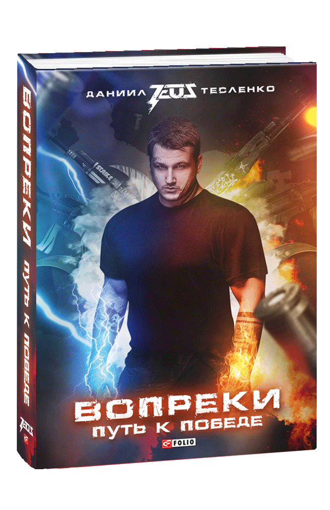

Danylo "Zeus" Teslenko

Всупереч: Шлях до перемоги
Ця книга - розповідь від першої особи, спогади кіберспортсмена, одного з кращих капітанів світу в Counter-Strike Данила Zeus Тесленко. На її сторінках він ділиться цікавими, смішними і трагічними подробицями свого шляху до перемоги на головному чемпіонаті світу - Major-і, потрапити на який мріють мільйони гравців з різних країн. Крім того, автор розкриває безліч секретів успішної командної та індивідуальної гри, спираючись на свій непростий досвід, дає поради гравцям, як підвищити свій професійний рівень, покращити стиль гри і досягти успіху в кіберспорті.